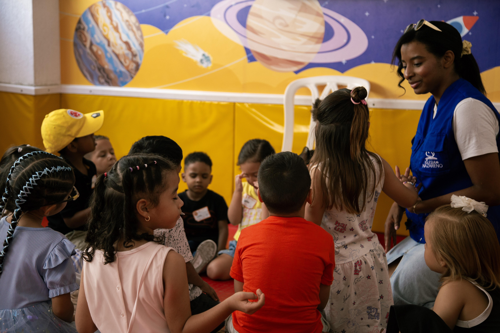
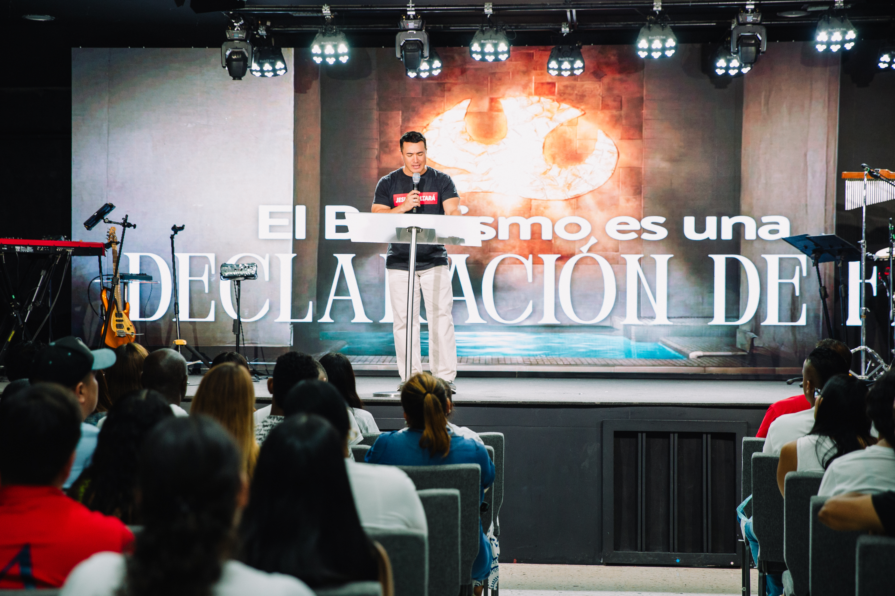

Construye comunidad
Sirve lado a lado con personas que comparten tu fe y conviértete en parte activa de una gran familia.

Voluntariado en Nazareno Cali
El voluntariado es una de las mejores maneras de conectar con la iglesia. Dios te ha dado talentos y pasiones únicas para edificar su casa y bendecir a otros. Encuentra el equipo perfecto para ponerlos en acción.
Sirve lado a lado con personas que comparten tu fe y conviértete en parte activa de una gran familia.

Cada fin de semana ayudas a crear una experiencia donde vidas son transformadas por el amor de Jesús.

Aseguras que cada persona que nos visita por primera vez se sienta valorada, vista y bienvenida.
¿Cómo funciona?
Conoce los diferentes ministerios y encuentra el que mejor se alinea con tus dones y disponibilidad de tiempo.
Te acompañamos en una sesión guiada para que conozcas la visión, a los líderes y las herramientas del equipo.
Empieza a participar activamente, creciendo en liderazgo mientras ves a Dios obrar a través de tus talentos.
Nuestros Ministerios
Ya sea que te guste conectar con personas, la creatividad digital, la música o el trabajo detrás de cámaras, hay un lugar listo para ti.
 Hospitalidad
Hospitalidad
Honra a nuestros invitados y hazlos sentir en casa.
Sé el primer rostro amable en recibir a quienes llegan. Desde las puertas de entrada y anfitriones de auditorio hasta acompañar a quienes nos visitan por primera vez.
Unirme a este equipo ↗ Comunicaciones
Comunicaciones
Crea la atmósfera audiovisual de cada celebración.
Ayuda a transmitir el mensaje con excelencia: operación de cámaras de video, sonido en vivo, iluminación, proyección de letras y streaming en directo. ¡No necesitas experiencia previa!
Unirme a este equipo ↗
Próxima GeneraciónForma a la nueva generación en la fe.
Un espacio lleno de alegría, creatividad y canciones bíblicas para niños desde sala cuna hasta primaria. Ayúdalos a construir una base firme en Jesús mientras sus padres disfrutan la reunión.
Unirme a este equipo ↗Lidera el tiempo de adoración en la presencia de Dios.
Músicos y vocalistas comprometidos que guían a la congregación cada domingo y en las reuniones de jóvenes a través de la música y la alabanza sincera.
Audicionar para Alabanza ↗Comunidad, discipulado y liderazgo juvenil.
Crea espacios los sábados para que adolescentes y universitarios vivan su fe con propósito, hagan amigos sanos y desarrollen su liderazgo.
Unirme a Jóvenes ↗
ComunidadEl amor de Jesús en movimiento para nuestra ciudad.
Apoyamos a familias necesitadas en Cali, brigadas de ayuda comunitaria, comedores y proyectos de servicio que impactan la sociedad.
Unirme a Acción Social ↗Dudas frecuentes
¡Para nada! La falta de experiencia previa no es un impedimento. Te brindamos todo el entrenamiento, acompañamiento y herramientas necesarias para que te sientas seguro y disfrutes servir.
Entendemos que los horarios de cada persona son diferentes. En la mayoría de los equipos servimos por turnos rotativos (por ejemplo, dos domingos al mes durante una de las celebraciones), permitiéndote también participar del culto.
Tus hijos estarán completamente cuidados y disfrutando en las salas de Nazareno Kids durante la celebración en la que estés sirviendo.
Es muy simple: haz clic en cualquiera de los botones de registro o comunícate con nosotros por WhatsApp. Un líder de ministerio se pondrá en contacto contigo para coordinar tu inducción.